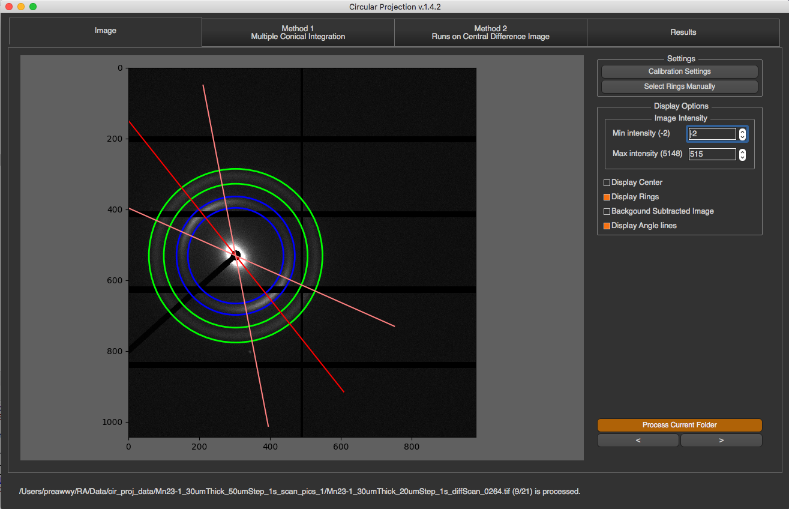
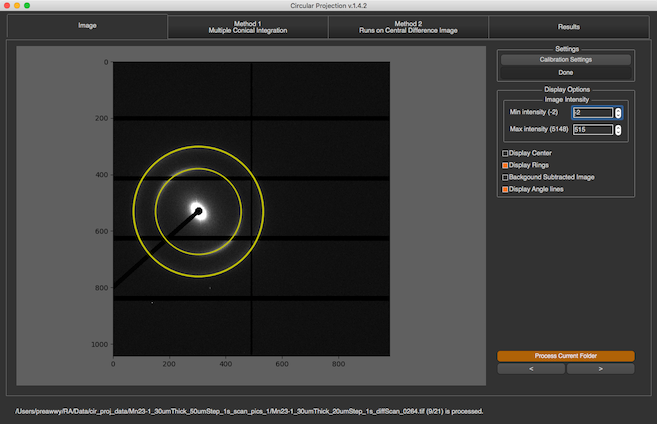
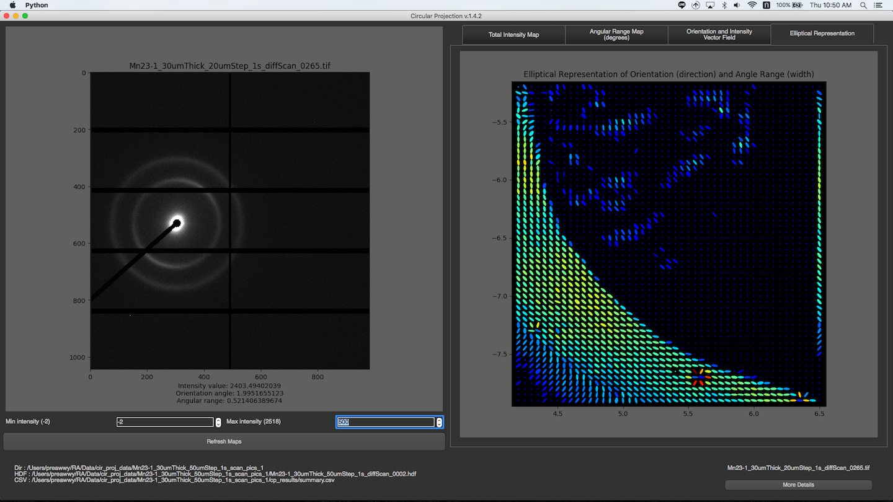

How to use¶
Once the program is run, you will see these 2 buttons for Individual Image Mode and Folder Mode/Batch Mode

Individual Image Mode¶
After an image is selected, the program will process it, and display all information in 4 tabs, Image, Method 1, Method 2, and Results
Image¶

There are several options on the right bar. In Settings section, you can do Calibration Settings and ring selections. To do the ring selection, you have to click the button, pick rings on the image, and click Done.

Another section is Display Options. You can set max intensity and min intensity to see the rings clearly. Also, there are some check boxes that allow you to see ring locations and their properties.
Method 1¶
This method is the first method of finding rings process. Click Here to see how it works

In this tab, you will see the image on the left along with its partial radial integrations, and its 1D integration on the right.
The partial radial integrations are displayed in the graph on the top. This represents 1D radial integration for specific angle range. The title of the graph will tell you what the current range is and what peaks are found. In the image above, the current range is 0-90 degrees. The image on the left will cover this range with red color. To see other ranges, you can click left or right arrow. You can also change angle size by changing Range Angle value. This requires program to re-calculate everything.

The 1D radial integration for all 360 degrees will be display at the bottom with final peaks as its title
Method 2¶
This method is the second method of finding rings process. Click Here to see how it works

There is a drop down list on the top that you can select what to see. There are original 2D integration, Central Differences, and log of central differences. You can also see runs and rings by just checking the box. Runs will be displayed in red and rings will be displayed in white.
Results¶
In this tab, you will see all fitting results on both radial integration, and angle projection.

You can select fitting graph that you want to see by selecting the drop down list on the top. You can select peaks manually by pressing “Select Peaks Manually”, select peaks in the graph, and click “Done”.

For fitting results, there are 2 text boxes at the bottom of this tab.
The box on the left will display total intensity and fitting results of peaks in 1D radial integration. For each peak, you will see …
- Center of the peak : Distance from the ring to center of the diffraction.
- Alpha : Area underneath the peak.
- Sigma d : Standard deviation of the ring distribution in radial direction.

The box on the right will display fitting results of ring orientation in angular projection. For each ring, you will see …
- Angle : Orientation angle of the ring
- Range : Angle +- Sigma
- Sigma : Standard deviation of the orientation angle
- Intensity : Area underneath the fitting gaussian
- Fitting Error : fitting error for orientation fitting ( the acceptable error should be less than 1 )

Folder Mode¶
After a folder is selected, and all images in the folder are processed, the program will read summary.csv and rings.csv to produce 4 maps. There are 4 tabs in this mode, so you can see any maps by choosing the tab. The maps will be displayed on the right. To see the image of a particular pixel, you can just simply click on that pixel in the maps. If the image exists, it will be shown on the left. You can change min or max intensity of the image by spin boxes under the image. To see more detail about the image, you can click “More Details” button at the bottom right corner. Then, there is a new window with individual image mode pops up, and you will see all the detail about the image.
Total Intensity Maps¶

You can change min or max intensity for the maps by spin boxes under the maps.

Orientation and Intensity Vector Field¶

You can change the length of vector by dragging the slide bar under the maps.
Elliptical Representation¶

If you think there might be some mistakes about fitting results at a pixel, you can fix it by ..
- Click on that pixel
- Click More Details
- Fix it in the individual image mode (You can close the window after fixing)
- Go back to Batch mode window, and click “Refresh Maps”